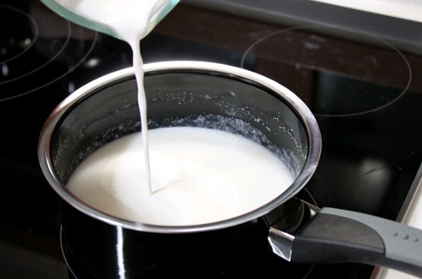

타락죽
줄거리
성찬이 에드워드를 만족시킨, 조선시대 임금님 상에도 올라간 우유로 만든 죽 한번 만들어 볼까요???
성찬이 에드워드를 만족시킨, 조선시대 임금님 상에도 올라간 우유로 만든 죽 한번 만들어 볼까요???
재료
찹쌀 100g, 물 150g, 우유 300g
찹쌀 100g, 물 150g, 우유 300g
레시피
1. 찹쌀을 씻어서 충분히 불립니다.
2. 불린 찹쌀을 믹서기에 넣고 갈아주세요. 되직한 타락죽을 원하면 물의 양을 적게 하세요.
3. 갈아놓은 찹쌀에 물을 넣고 냄비에 끓입니다. 주의! 눌러붙지 않도록 약한 불에서 잘 저어가며 끓여주세요
4. 찹쌀이 익으면 다시 한 번 믹서기에 갈아줍니다.
 5. 다시 냄비에 넣고 우유를 조금씩 넣어가며 약한 불에서 끓여줍니다.
6. 농도가 적당하게 끓였으면 완성!
*****완성*****